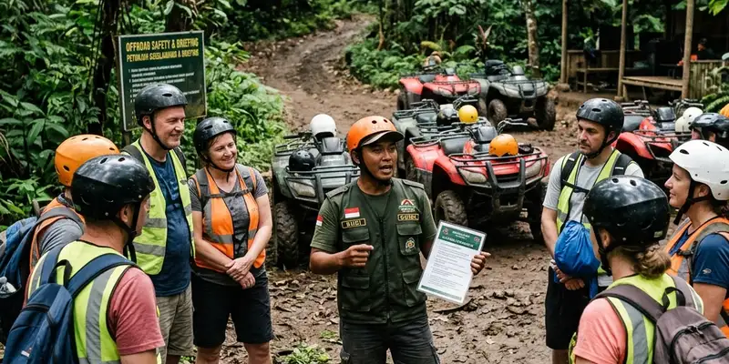

Budgeting event perusahaan akan lebih akurat apabila didukung oleh pemilihan vendor outbound terpercaya yang memiliki pengalaman, fasilitas lengkap, dan rincian harga yang transparan.
Ringkasan Inti
- Vendor outbound terpercaya biasanya memiliki portofolio kegiatan yang jelas.
- Transparansi rincian harga membantu proses budgeting event perusahaan.
- Keselamatan peserta menjadi indikator penting dalam menilai kualitas vendor.
- Fasilitator berpengalaman memengaruhi kelancaran aktivitas di lapangan.
- Perbandingan beberapa vendor membantu mendapatkan penawaran paling sesuai anggaran.
Secara umum, banyak perusahaan menetapkan vendor outbound berdasarkan rekomendasi internal atau pengalaman sebelumnya, namun tetap disarankan melakukan evaluasi ulang setiap kali menyusun budgeting event perusahaan agar penawaran yang diterima tetap relevan dengan kebutuhan terkini.
Apa Kriteria Vendor Outbound yang Terpercaya?
Kriteria vendor outbound yang terpercaya meliputi pengalaman menangani berbagai skala peserta, kelengkapan perlengkapan keselamatan, serta transparansi dalam menyusun rincian harga paket.
Vendor yang terpercaya umumnya bersedia menjelaskan secara detail apa saja yang termasuk dalam paket harga, mulai dari jumlah fasilitator, jenis aktivitas, hingga fasilitas pendukung seperti konsumsi dan dokumentasi. Selain itu, vendor yang baik biasanya memiliki standar prosedur keselamatan yang jelas, terutama untuk aktivitas yang melibatkan ketinggian, air, atau permainan fisik lainnya.
Pengalaman vendor dalam menangani kelompok perusahaan dengan latar belakang industri berbeda juga menjadi nilai tambah, karena setiap perusahaan memiliki karakter tim dan kebutuhan aktivitas yang berbeda-beda.
Bagaimana Cara Membandingkan Penawaran Antar Vendor?
Cara membandingkan penawaran antar vendor adalah dengan meminta rincian tertulis dari masing-masing vendor, lalu menyandingkan komponen biaya dan fasilitas yang ditawarkan pada anggaran yang sama.
Perusahaan dapat meminta penawaran dari beberapa vendor, termasuk vendor Gemilang Katun Outbound, kemudian membuat tabel perbandingan sederhana yang mencakup harga per peserta, jumlah fasilitator, jenis aktivitas, serta fasilitas tambahan seperti dokumentasi atau perlengkapan keselamatan. Dengan cara ini, perusahaan dapat menilai vendor mana yang menawarkan nilai terbaik, bukan hanya harga termurah.
Penting juga untuk mempertimbangkan testimoni atau rekam jejak vendor dari klien sebelumnya sebagai bahan pertimbangan tambahan sebelum menentukan pilihan akhir.

Mengevaluasi secara langsung layanan yang ditawarkan vendor dapat meminimalisasi risiko miskomunikasi.
Apa Risiko Memilih Vendor Outbound Tanpa Evaluasi?
Risiko memilih vendor outbound tanpa evaluasi meliputi ketidaksesuaian fasilitas dengan ekspektasi, potensi masalah keselamatan, hingga pembengkakan biaya di luar rencana awal.
Tanpa evaluasi yang memadai, perusahaan berisiko menerima penawaran yang terlihat murah di awal namun ternyata tidak mencakup komponen penting seperti fasilitator berpengalaman atau perlengkapan keselamatan yang memadai. Hal ini dapat berdampak pada kelancaran acara maupun keselamatan peserta selama kegiatan berlangsung.
Selain itu, vendor yang kurang berpengalaman berisiko mengalami kendala teknis di lapangan, seperti keterlambatan logistik atau ketidaksesuaian jadwal, yang pada akhirnya dapat memengaruhi citra acara di mata karyawan.
Bagaimana Menyesuaikan Pilihan Vendor dengan Anggaran yang Tersedia?
Pilihan vendor dapat disesuaikan dengan anggaran yang tersedia melalui diskusi terbuka mengenai kebutuhan acara dan kemungkinan penyesuaian paket sesuai kapasitas keuangan perusahaan.
Banyak vendor outbound menawarkan beberapa pilihan paket dengan tingkatan fasilitas berbeda, sehingga perusahaan dapat memilih paket yang paling sesuai tanpa mengorbankan kualitas inti kegiatan. Diskusi terbuka mengenai prioritas aktivitas juga membantu vendor memberikan rekomendasi penyesuaian yang realistis.
Tips Praktis Sebelum Menunjuk Vendor Outbound
Sebelum menunjuk vendor outbound, perusahaan sebaiknya melakukan survei lokasi, memeriksa legalitas usaha vendor, dan menegosiasikan kontrak kerja sama secara tertulis.
- Lakukan survei lokasi bersama vendor sebelum hari pelaksanaan.
- Periksa legalitas usaha dan pengalaman vendor dalam menangani kegiatan serupa.
- Pastikan kontrak kerja sama mencakup rincian biaya dan tanggung jawab masing-masing pihak.
- Tanyakan prosedur keselamatan yang diterapkan vendor selama kegiatan berlangsung.
Kesimpulan
Memilih vendor outbound terpercaya menjadi bagian penting dalam budgeting event perusahaan yang efisien dan aman. Pelajari juga cara menyusun anggaran outbound corporate gathering dan komponen biaya outbound perusahaan untuk pertimbangan yang lebih lengkap.
FAQ Seputar Pemilihan Vendor Outbound
Kredibilitas vendor outbound dapat dinilai dari pengalaman, portofolio kegiatan sebelumnya, serta transparansi dalam memberikan rincian harga dan fasilitas.
Harga termurah tidak selalu menjadi pilihan terbaik karena perlu dipertimbangkan pula kelengkapan fasilitas, pengalaman fasilitator, dan standar keselamatan yang diterapkan vendor.
Kontrak kerja sama sebaiknya mencantumkan rincian biaya, jadwal kegiatan, tanggung jawab masing-masing pihak, serta ketentuan bila terjadi perubahan jumlah peserta.